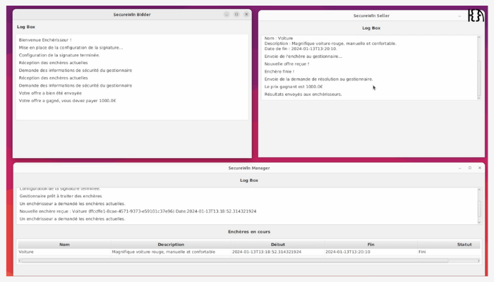

Saé S3 & S4

SecureWin : Application d'enchères sécurisée à pli fermé.
Compétence 1 : Réaliser un développement d’application
Liste des apprentissages critiques :
AC 1 Élaborer et implémenter les spécifications fonctionnelles et non fonctionnelles à partir des exigences
Chaque sprint débutait par une phase d'analyse à partir des nouvelles exigences,
qui consistait en l'élaboration du diagramme de cas d'usages, qui met en avant les besoins non fonctionnels,
et des spécifications supplémentaires, qui prennent en compte des spécifications fonctionnelles.
AC 2 Appliquer des principes d'accessibilité et d'ergonomie
En intégrant une interface graphique, nous avons élaboré une interface ergonomique
et accessible de par sa simplicité.
AC 3 Adopter de bonnes pratiques de conception et de programmation
Nous avons intégré durant la conception et la programmation les principes SOLID et les design patterns
que nous avons vus en cours de qualité de développement. Particulièrement lors du semestre 4, nous avons restructuré certaines parties du code.
AC 4 Vérifier et valider la qualité de l'application par les tests
Des tests ont été rédigé lors de l'implémentation de nouvelles fonctionnalités. Tel que la signature et sa persistance.
Liste des composantes essentielles :
CE 1 En respectant les besoins décrits par le client
Un product backlog servait à répertorier les besoins du client, il était alimenté lors de chaque réunion effectuée avec le client.
CE 2 En appliquant les principes algorithmiques
Lors du semestre 4, nous avons implémenté un nouvel algorithme de chiffrement homomorphe exigé et décrit par le client.
CE 3 En veillant à la qualité du code et à sa documentation
La qualité du code était surveillé avec des commits réguliers, une documentation a été réalisée grace à une javadoc.
CE 4 En choisissant les ressources techniques appropriées
Nous avons opté pour un développement avec une version de java permettant l'utilisation de javafx
pour l'interface graphique et l'utilisaiton de keytool pour la génération de signatures.
Compétence 2 : Optimiser des applications
Liste des apprentissages critiques :
AC 1 Choisir des structures de données complexes adaptées au problème
Nous avons mis en place des structures de données complexes pour
transférer des enchères, des offres, des résultats d'enchères etc.
AC 2 Utiliser des techniques algorithmiques adaptées pour
des problèmes complexes
Durant le semestre 3 nous avons utilisé des algorithmes de chiffrement en combinant RSA et AES,
pour la signature et le chiffrement des prix. Lors du semestre 4 nous avons implémenté un algorithme de chiffrement homomorphe pour chiffrer les prix.
AC 3 Comprendre les enjeux et moyens de sécurisation des données et du code
Nous avons compris les enjeux de la sécurisation des données et du code en appliquant du chiffrement et mettant en place des protocoles contre un attaquant potentiel.
AC 4 Évaluer l'impact environnemental et sociétal des solutions proposées
Nous avons pris en compte l'impact environnemental de ces applications, c'est pourquoi elles n'imposent pas l'utilisation d'une base de données.
De plus, le déploiement des applications sur Docker permet une virtualisation qui assure une diminution de la quantité d'énergie consommée.
Liste des composantes essentielles :
CE 1 En formalisant et modélisant des situations complexes
Les situations complexes ont été prises en compte au travers de la rédaction du scénario nominal et des scénarios alternatifs.
CE 2 En recensant les algorithmes et les structures de données usuels
Nous avons rencensé ces algorithmes et structures de données dans un document de spécifications supplémentaires.
CE 3 En s'appuyant sur des schémas de raisonnement
Nous nous sommes appuyés sur des schémas de raisonnement donné par le client dans sa note d'intention et nous l'avons alimenté au cours du développement.
CE 4 En justifiant les choix et validant les résultats
Nous avons justifié nos choix à chaque revues de sprint, et avec une démonstration des applications au client qui a validé ou non nos choix.
Compétence 3 : Administrer des systèmes informatiques communicants complexes
Liste des apprentissages critiques :
AC 1 Concevoir et développer des applications communicantes
Nous avons conçu et développé trois applications communicantes, au travers de l'utilisation socket sécurisés (SSL).
AC 2 Utiliser des serveurs et des services réseaux virtualisés
Durant le semestre 4, nous avons utilisé Docker pour déployer et virtualiser nos trois applications.
AC 3 Sécuriser les services et données d'un système
Les services de nos trois applications sont sécurisées au travers du chiffrement, des signatures,
du certificat SSL permettant la communication sécurisée et des tests.
Liste des composantes essentielles :
CE 1 En sécurisant le système d'information
Le SI a été sécurisé au travers de nombreux services : chiffrement, signature, certificat ssl et des tests.
CE 2 En appliquant les normes en vigueur et les bonnes pratiques architecturales et de sécurité
Nous avons appliqué les principes SOLID et design patterns assurant les bonnes pratiques du code et de sécurité.
CE 3 En offrant une qualité de service optimale
A travers nos tests nous avons pu offrir une qualité de service optimale grace à nos trois applications.
CE 4 En assurant la continuité d'activité
Nous avons assuré une continuité d'activité avec la méthodologie agile SCRUM.
Compétence 4 : Gérer des données de l’information
Liste des apprentissages critiques :
AC 1 Optimiser les modèles de données de l'entreprise
Dans le cas d'une utilisation en entreprise, notre application est optimisé grace à une application destinée aux entreprises et deux applications destinées aux clients.
AC 2 Assurer la confidentialité des données (intégrité et sécurité)
La confidentialité des données est assurée grace au chiffrement et au fait qu'aucune données n'est collectée.
AC 3 Organiser la restitution de données à travers la programmation et la visualisation
Nous avons organisé nos données en visualisant nos diagrammes de conception.
AC 4 Manipuler des données hétérogènes
Nous avons manipulé des données hétérogènes tels que : le prix d'un participant, une enchère (sujet, description, date), des chiffrés, des signatures...
Liste des composantes essentielles :
CE 1 En respectant les réglementations sur le respect de la vie privée et la protection des données personnelles
Le respect de la vie privée et la protection des données personnelles
sont assurées de par les fonctionnalités de sécurisation qui ont été implémentées (chiffrement, signatures, certificat SSL).
CE 2 En respectant les enjeux économiques, sociétaux et écologiques de l'utilisation du stockage de données,
ainsi que les différentes infrastructures (data centers, cloud, etc.)
CE 3 En s'appuyant sur des bases mathématiques
Durant le semestre 4, nous nous sommes appuyés sur des bases mathématiques pour implémenter un nouvel algorithme de chiffrement homomorphe.
CE 4 En assurant la cohérence et la qualité
Nous avons assuré la cohérnece et la qualité au travers des tests unitaires.
Compétence 5 : Conduire un projet
Liste des apprentissages critiques :
AC 1 Identifier les processus présents dans une organisation
en vue d'améliorer les systèmes d'information
AC 2 Formaliser les besoins du client et de l'utilisateur
Nous avons formaliser les besoins avec le product backlog et une
to do list, qui ont été alimentés à chaque réunions et début de sprint.
AC 3 Identifier les critères de faisabilité d'un projet informatique
Lors de chaque réunions avec le client, nous ne nous engagions pas tant qu'il n'y avait pas eu d'échanges
autour des nouvelles exigences avec l'équipe de développement. Cela permettait d'identifier en équipe la faisabilité des besoins
du client en fonction de nos compétences et de nos moyens.
AC 4 Définir et mettre en œuvre une démarche de suivi de projet
Nous avons mis en œuvre un suivi de projet avec : un product backlog,
une to do list, des comptes rendus de réunion, des documents d'analyse et de conception,
et des documents de bilan de fin de sprint.
Liste des composantes essentielles :
CE 1 En communiquant efficacement avec les différents acteurs d'un projet
La communication était assurée entre les membres de l'équipe de développement grâce à un serveur de l'application Discord.
La communication avec le client était assurée avec des envois de mails.
CE 2 En respectant les règles juridiques et les normes en vigueur
Nous avons respecté les règles juridiques et normes tels que le RGPD, et le paysage juridique des enchères.
En notant nos recherches dans le documents de spécifications supplémentaires.
CE 3 En sensibilisant à une gestion éthique, responsable, durable et interculturelle
CE 4 En adoptant une démarche proactive, créative et critique
Nous avons adopté une démarche critque au travers des bilans de fin de sprint afin de nous améliorer.
Compétence 6 : Collaborer au sein d’une équipe informatique
Liste des apprentissages critiques :
AC 1 Comprendre la diversité, la structure et la dimension de l'informatique dans une organisation (ESN, DSI, …)
AC 2 Appliquer une démarche pour intégrer une équipe informatique au sein d'une organisation
Des réunions régulières (stand up meeting) ont été mises en place non seulement pour assurer le suivi du projet
mais aussi pour s'intéresser à chaque membre de l'équipe de développement et assurer l'intégration de chacun.
AC 3 Mobiliser les compétences interpersonnelles pour intégrer une équipe informatique
J'ai mobiliser mon empathie, mon esprit d'équipe et ma curiosité pour intégrer cette nouvelle équipe de développement.
AC 4 Rendre compte de son activité professionnelle
J'ai rendu compte de mon activité professionnelle à chaque réunions d'équipe (stand up meeting), à chaque commits sur git, et sur notre serveur Discord.
Liste des composantes essentielles :
CE 1 En inscrivant sa démarche au sein d'une équipe pluridisciplinaire
Nous avons sollicité chaque membres de l'équipe de développement à travers leurs compétences.
CE 2 En accompagnant la mise en œuvre des évolutions informatiques
CE 3 En veillant au respect des contraintes juridiques
Nous avons spécifié nos contraintes juridiques liées aux enchères dans notre document de spécifications supplémentaires.
CE 4 En développant une communication efficace et collaborative
Nous avons développé une communication efficace et collaborative grace aux outils tels que Discord et gitlab, mais aussi grace aux réunion régulières (stand up meeting).
.png)
Pluche
Compétence 1 : Réaliser un développement d’application
Liste des apprentissages critiques :
AC 1 Élaborer et implémenter les spécifications fonctionnelles et non fonctionnelles à partir des exigences
Nous avons pris en compte des exigences à travers un tableau des exigences.
AC 2 Appliquer des principes d'accessibilité et d'ergonomie
Le site web a été développé en prenant en compte l'accès au site sur téléphone. (il est responsif)
AC 3 Adopter de bonnes pratiques de conception et de programmation
Nous avons effectué des commits réguliers et précis.
Liste des composantes essentielles :
CE 1 En respectant les besoins décrits par le client
Nous avons respecté les besoins décrits avec un tableau des exigences pour suivre le projet.
CE 2 En appliquant les principes algorithmiques
CE 3 En veillant à la qualité du code et à sa documentation
CE 4 En choisissant les ressources techniques appropriées
Compétence 2 : Optimiser des applications
Liste des apprentissages critiques :
AC 3 Comprendre les enjeux et moyens de sécurisation des données et du code
Nous avons mis en place des sécurités contre les attaques XSS, des injections SQL, et des attaques courantes de site web.
Liste des composantes essentielles :
CE 1 En formalisant et modélisant des situations complexes
CE 2 En recensant les algorithmes et les structures de données
usuels
CE 3 En s'appuyant sur des schémas de raisonnement
CE 4 En justifiant les choix et validant les résultats
Nous avons validé nos résultats en testant notre site web.
Compétence 3 : Administrer des systèmes informatiques communicants complexes
Liste des apprentissages critiques :
AC 3 Sécuriser les services et données d'un système
Nous avons sécurisé nos services et nos données avec du hachage de mots de passe.
Liste des composantes essentielles :
CE 1 En sécurisant le système d'information
CE 2 En appliquant les normes en vigueur et les bonnes pratiques architecturales et de sécurité
Nous avons appliqué les bonnes pratiques architecturales et de sécurité avec l'architecture MVC et un htaccess, une interdiction d'accès à des pages sensibles.
CE 3 En offrant une qualité de service optimale
CE 4 En assurant la continuité d'activité
Nous avons assuré la continuité d'activité grace à gitlab.
Compétence 4 : Gérer des données de l’information
Liste des apprentissages critiques :
AC 3 Organiser la restitution de données à travers la program-
mation et la visualisation
Grace à notre IDE phpstorms et phpmyadmin nous pouvions visualiser nos données et notre programme de manière gloable.
AC 4 Manipuler des données hétérogènes
Nous avons manipuler des données hétérogènes avec nos comptes utilisateurs, nos produits, nos achats qui contenait une variété de données.
Liste des composantes essentielles :
CE 1 En respectant les réglementations sur le respect de la vie
privée et la protection des données personnelles
Nous avons respecté les réglementations sur le respect de la vie privée et la protection
des données personnelles en sécurisant le site web, hachant les données sensibles, et collectant les données uniquement nécessaire.
CE 2 En respectant les enjeux économiques, sociétaux et écologiques de l'utilisation du stockage de données, ainsi
que les différentes infrastructures (data centers, cloud, etc.)
CE 3 En s'appuyant sur des bases mathématiques
CE 4 En assurant la cohérence et la qualité